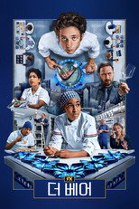
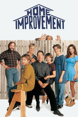

디즈니+ 드라마·시리즈198편 중 인기 60편
순서: 넷플릭스 한국 TOP10 에 든 작품을 먼저(최근에 든 순), 그다음은 TMDB 전 세계 인기도 순입니다 — 넷플릭스 외 서비스는 공식 순위를 공개하지 않습니다. 제공처는 JustWatch 자료(2026-09-24 확인)이며 가입 전 서비스에서 최종 확인하세요. 디즈니+ 요금·할인 →
1 굿보이 GOOD BOY시리즈 · 2025 · 범죄 · 코미디 · 넷플릭스, 웨이브, 티빙에도넷플릭스 한국 최고 2위2
굿보이 GOOD BOY시리즈 · 2025 · 범죄 · 코미디 · 넷플릭스, 웨이브, 티빙에도넷플릭스 한국 최고 2위2 열혈사제 The Fiery Priest시리즈 · 2019 · 범죄 · 코미디 · 넷플릭스, 왓챠에도넷플릭스 한국 최고 6위3
열혈사제 The Fiery Priest시리즈 · 2019 · 범죄 · 코미디 · 넷플릭스, 왓챠에도넷플릭스 한국 최고 6위3 그레이 아나토미 Grey's Anatomy시리즈 · 2005 · 드라마제공처 ↗4
그레이 아나토미 Grey's Anatomy시리즈 · 2005 · 드라마제공처 ↗4 크리미널 마인드 Criminal Minds시리즈 · 2005 · 범죄 · 드라마제공처 ↗5
크리미널 마인드 Criminal Minds시리즈 · 2005 · 범죄 · 드라마제공처 ↗5 본즈 Bones시리즈 · 2005 · 범죄 · 드라마 · 넷플릭스에도제공처 ↗6
본즈 Bones시리즈 · 2005 · 범죄 · 드라마 · 넷플릭스에도제공처 ↗6 캐슬 Castle시리즈 · 2009 · 드라마 · 범죄제공처 ↗7
캐슬 Castle시리즈 · 2009 · 드라마 · 범죄제공처 ↗7 모던 패밀리 Modern Family시리즈 · 2009 · 코미디제공처 ↗8
모던 패밀리 Modern Family시리즈 · 2009 · 코미디제공처 ↗8 아메리칸 호러 스토리 American Horror Story시리즈 · 2011 · 드라마 · 미스터리제공처 ↗9
아메리칸 호러 스토리 American Horror Story시리즈 · 2011 · 드라마 · 미스터리제공처 ↗9 위기의 주부들 Desperate Housewives시리즈 · 2004 · 미스터리 · 드라마 · 티빙에도제공처 ↗10
위기의 주부들 Desperate Housewives시리즈 · 2004 · 미스터리 · 드라마 · 티빙에도제공처 ↗10 24시리즈 · 2001 · 액션 · 모험제공처 ↗11
24시리즈 · 2001 · 액션 · 모험제공처 ↗11 9-1-1시리즈 · 2018 · 드라마 · 범죄제공처 ↗12
9-1-1시리즈 · 2018 · 드라마 · 범죄제공처 ↗12 워킹 데드 The Walking Dead시리즈 · 2010 · 액션 · 모험 · 넷플릭스에도제공처 ↗13
워킹 데드 The Walking Dead시리즈 · 2010 · 액션 · 모험 · 넷플릭스에도제공처 ↗13 엑스 파일 The X-Files시리즈 · 1993 · 미스터리 · SF/판타지제공처 ↗14
엑스 파일 The X-Files시리즈 · 1993 · 미스터리 · SF/판타지제공처 ↗14 프리즌 브레이크 Prison Break시리즈 · 2005 · 액션 · 모험제공처 ↗15
프리즌 브레이크 Prison Break시리즈 · 2005 · 액션 · 모험제공처 ↗15 원스 어폰 어 타임 Once Upon a Time시리즈 · 2011 · 드라마 · SF/판타지제공처 ↗16
원스 어폰 어 타임 Once Upon a Time시리즈 · 2011 · 드라마 · SF/판타지제공처 ↗16 로스트 Lost시리즈 · 2004 · 미스터리 · 액션제공처 ↗17
로스트 Lost시리즈 · 2004 · 미스터리 · 액션제공처 ↗17 내가 그녀를 만났을 때 How I Met Your Mother시리즈 · 2005 · 코미디제공처 ↗18
내가 그녀를 만났을 때 How I Met Your Mother시리즈 · 2005 · 코미디제공처 ↗18 스트레인 The Strain시리즈 · 2014 · SF/판타지 · 드라마제공처 ↗19
스트레인 The Strain시리즈 · 2014 · SF/판타지 · 드라마제공처 ↗19 필라델피아는 언제나 맑음 It's Always Sunny in Philadelphia시리즈 · 2005 · 코미디제공처 ↗20
필라델피아는 언제나 맑음 It's Always Sunny in Philadelphia시리즈 · 2005 · 코미디제공처 ↗20 썬즈 오브 아나키 Sons of Anarchy시리즈 · 2008 · 범죄 · 드라마제공처 ↗21
썬즈 오브 아나키 Sons of Anarchy시리즈 · 2008 · 범죄 · 드라마제공처 ↗21 스크럽스 Scrubs시리즈 · 2001 · 코미디제공처 ↗22
스크럽스 Scrubs시리즈 · 2001 · 코미디제공처 ↗22 홈랜드 Homeland시리즈 · 2011 · 드라마 · 전쟁 · 넷플릭스에도제공처 ↗23
홈랜드 Homeland시리즈 · 2011 · 드라마 · 전쟁 · 넷플릭스에도제공처 ↗23 미녀와 뱀파이어 Buffy the Vampire Slayer시리즈 · 1997 · 코미디 · 드라마제공처 ↗24
미녀와 뱀파이어 Buffy the Vampire Slayer시리즈 · 1997 · 코미디 · 드라마제공처 ↗24 디스 이즈 어스 This Is Us시리즈 · 2016 · 드라마제공처 ↗25
디스 이즈 어스 This Is Us시리즈 · 2016 · 드라마제공처 ↗25 더 프랙티스 The Practice시리즈 · 1997 · 드라마제공처 ↗26
더 프랙티스 The Practice시리즈 · 1997 · 드라마제공처 ↗26 보스턴 리걸 Boston Legal시리즈 · 2004 · 코미디 · 드라마제공처 ↗27
보스턴 리걸 Boston Legal시리즈 · 2004 · 코미디 · 드라마제공처 ↗27 에이전트 오브 쉴드 Marvel's Agents of S.H.I.E.L.D.시리즈 · 2013 · 드라마 · SF/판타지제공처 ↗28
에이전트 오브 쉴드 Marvel's Agents of S.H.I.E.L.D.시리즈 · 2013 · 드라마 · SF/판타지제공처 ↗28 말콤네 좀 말려줘 Malcolm in the Middle시리즈 · 2000 · 코미디제공처 ↗29
말콤네 좀 말려줘 Malcolm in the Middle시리즈 · 2000 · 코미디제공처 ↗29 글리 Glee시리즈 · 2009 · 코미디 · 드라마제공처 ↗30
글리 Glee시리즈 · 2009 · 코미디 · 드라마제공처 ↗30 뉴 걸 New Girl시리즈 · 2011 · 코미디제공처 ↗31
뉴 걸 New Girl시리즈 · 2011 · 코미디제공처 ↗31 프라이빗 프랙티스 Private Practice시리즈 · 2007 · 드라마제공처 ↗32
프라이빗 프랙티스 Private Practice시리즈 · 2007 · 드라마제공처 ↗32 트래커 Tracker시리즈 · 2024 · 드라마 · 범죄제공처 ↗33
트래커 Tracker시리즈 · 2024 · 드라마 · 범죄제공처 ↗33 하이 포텐셜 High Potential시리즈 · 2024 · 드라마 · 범죄제공처 ↗34
하이 포텐셜 High Potential시리즈 · 2024 · 드라마 · 범죄제공처 ↗34 범죄의 재구성 How to Get Away with Murder시리즈 · 2014 · 범죄 · 드라마제공처 ↗35
범죄의 재구성 How to Get Away with Murder시리즈 · 2014 · 범죄 · 드라마제공처 ↗35 더 레지던트 The Resident시리즈 · 2018 · 드라마 · 넷플릭스에도제공처 ↗36
더 레지던트 The Resident시리즈 · 2018 · 드라마 · 넷플릭스에도제공처 ↗36 화이트 칼라 White Collar시리즈 · 2009 · 범죄 · 드라마제공처 ↗37
화이트 칼라 White Collar시리즈 · 2009 · 범죄 · 드라마제공처 ↗37 아파트 이웃들이 수상해 Only Murders in the Building시리즈 · 2021 · 코미디 · 미스터리제공처 ↗38
아파트 이웃들이 수상해 Only Murders in the Building시리즈 · 2021 · 코미디 · 미스터리제공처 ↗38 로키 Loki시리즈 · 2021 · 드라마 · SF/판타지제공처 ↗39
로키 Loki시리즈 · 2021 · 드라마 · SF/판타지제공처 ↗39 블랙키시 black-ish시리즈 · 2014 · 코미디제공처 ↗40데어데블: 본 어게인 Daredevil: Born Again시리즈 · 2025 · 드라마 · 액션제공처 ↗41
블랙키시 black-ish시리즈 · 2014 · 코미디제공처 ↗40데어데블: 본 어게인 Daredevil: Born Again시리즈 · 2025 · 드라마 · 액션제공처 ↗41 스테이션 19 Station 19시리즈 · 2018 · 드라마 · 액션제공처 ↗42엔젤 Angel시리즈 · 1999 · SF/판타지 · 드라마제공처 ↗43애봇 초등학교 Abbott Elementary시리즈 · 2021 · 코미디제공처 ↗44브라더스 앤 시스터스 Brothers and Sisters시리즈 · 2006 · 드라마제공처 ↗45오빌 The Orville시리즈 · 2017 · 드라마 · 코미디제공처 ↗46만달로리안 The Mandalorian시리즈 · 2019 · SF/판타지 · 액션제공처 ↗47Marvel 퍼니셔 Marvel's The Punisher시리즈 · 2017 · 액션 · 모험제공처 ↗48
스테이션 19 Station 19시리즈 · 2018 · 드라마 · 액션제공처 ↗42엔젤 Angel시리즈 · 1999 · SF/판타지 · 드라마제공처 ↗43애봇 초등학교 Abbott Elementary시리즈 · 2021 · 코미디제공처 ↗44브라더스 앤 시스터스 Brothers and Sisters시리즈 · 2006 · 드라마제공처 ↗45오빌 The Orville시리즈 · 2017 · 드라마 · 코미디제공처 ↗46만달로리안 The Mandalorian시리즈 · 2019 · SF/판타지 · 액션제공처 ↗47Marvel 퍼니셔 Marvel's The Punisher시리즈 · 2017 · 액션 · 모험제공처 ↗48
굿보이 GOOD BOY시리즈 · 2025 · 범죄 · 코미디 · 넷플릭스, 웨이브, 티빙에도넷플릭스 한국 최고 2위2열혈사제 The Fiery Priest시리즈 · 2019 · 범죄 · 코미디 · 넷플릭스, 왓챠에도넷플릭스 한국 최고 6위3그레이 아나토미 Grey's Anatomy시리즈 · 2005 · 드라마제공처 ↗4크리미널 마인드 Criminal Minds시리즈 · 2005 · 범죄 · 드라마제공처 ↗5본즈 Bones시리즈 · 2005 · 범죄 · 드라마 · 넷플릭스에도제공처 ↗6캐슬 Castle시리즈 · 2009 · 드라마 · 범죄제공처 ↗7모던 패밀리 Modern Family시리즈 · 2009 · 코미디제공처 ↗8아메리칸 호러 스토리 American Horror Story시리즈 · 2011 · 드라마 · 미스터리제공처 ↗9위기의 주부들 Desperate Housewives시리즈 · 2004 · 미스터리 · 드라마 · 티빙에도제공처 ↗1024시리즈 · 2001 · 액션 · 모험제공처 ↗119-1-1시리즈 · 2018 · 드라마 · 범죄제공처 ↗12워킹 데드 The Walking Dead시리즈 · 2010 · 액션 · 모험 · 넷플릭스에도제공처 ↗13엑스 파일 The X-Files시리즈 · 1993 · 미스터리 · SF/판타지제공처 ↗14프리즌 브레이크 Prison Break시리즈 · 2005 · 액션 · 모험제공처 ↗15원스 어폰 어 타임 Once Upon a Time시리즈 · 2011 · 드라마 · SF/판타지제공처 ↗16로스트 Lost시리즈 · 2004 · 미스터리 · 액션제공처 ↗17내가 그녀를 만났을 때 How I Met Your Mother시리즈 · 2005 · 코미디제공처 ↗18스트레인 The Strain시리즈 · 2014 · SF/판타지 · 드라마제공처 ↗19필라델피아는 언제나 맑음 It's Always Sunny in Philadelphia시리즈 · 2005 · 코미디제공처 ↗20썬즈 오브 아나키 Sons of Anarchy시리즈 · 2008 · 범죄 · 드라마제공처 ↗21스크럽스 Scrubs시리즈 · 2001 · 코미디제공처 ↗22홈랜드 Homeland시리즈 · 2011 · 드라마 · 전쟁 · 넷플릭스에도제공처 ↗23미녀와 뱀파이어 Buffy the Vampire Slayer시리즈 · 1997 · 코미디 · 드라마제공처 ↗24디스 이즈 어스 This Is Us시리즈 · 2016 · 드라마제공처 ↗25더 프랙티스 The Practice시리즈 · 1997 · 드라마제공처 ↗26보스턴 리걸 Boston Legal시리즈 · 2004 · 코미디 · 드라마제공처 ↗27에이전트 오브 쉴드 Marvel's Agents of S.H.I.E.L.D.시리즈 · 2013 · 드라마 · SF/판타지제공처 ↗28말콤네 좀 말려줘 Malcolm in the Middle시리즈 · 2000 · 코미디제공처 ↗29글리 Glee시리즈 · 2009 · 코미디 · 드라마제공처 ↗30뉴 걸 New Girl시리즈 · 2011 · 코미디제공처 ↗31프라이빗 프랙티스 Private Practice시리즈 · 2007 · 드라마제공처 ↗32트래커 Tracker시리즈 · 2024 · 드라마 · 범죄제공처 ↗33하이 포텐셜 High Potential시리즈 · 2024 · 드라마 · 범죄제공처 ↗34범죄의 재구성 How to Get Away with Murder시리즈 · 2014 · 범죄 · 드라마제공처 ↗35더 레지던트 The Resident시리즈 · 2018 · 드라마 · 넷플릭스에도제공처 ↗36화이트 칼라 White Collar시리즈 · 2009 · 범죄 · 드라마제공처 ↗37아파트 이웃들이 수상해 Only Murders in the Building시리즈 · 2021 · 코미디 · 미스터리제공처 ↗38로키 Loki시리즈 · 2021 · 드라마 · SF/판타지제공처 ↗39블랙키시 black-ish시리즈 · 2014 · 코미디제공처 ↗40데어데블: 본 어게인 Daredevil: Born Again시리즈 · 2025 · 드라마 · 액션제공처 ↗41스테이션 19 Station 19시리즈 · 2018 · 드라마 · 액션제공처 ↗42엔젤 Angel시리즈 · 1999 · SF/판타지 · 드라마제공처 ↗43애봇 초등학교 Abbott Elementary시리즈 · 2021 · 코미디제공처 ↗44브라더스 앤 시스터스 Brothers and Sisters시리즈 · 2006 · 드라마제공처 ↗45오빌 The Orville시리즈 · 2017 · 드라마 · 코미디제공처 ↗46만달로리안 The Mandalorian시리즈 · 2019 · SF/판타지 · 액션제공처 ↗47Marvel 퍼니셔 Marvel's The Punisher시리즈 · 2017 · 액션 · 모험제공처 ↗48
더 베어 The Bear시리즈 · 2022 · 드라마 · 코미디제공처 ↗49
아빠 뭐 하세요 Home Improvement시리즈 · 1991 · 코미디제공처 ↗50마블 데어데블 Marvel's Daredevil시리즈 · 2015 · 범죄 · 드라마제공처 ↗51아메리칸즈 The Americans시리즈 · 2013 · 범죄 · 드라마제공처 ↗52스노우폴 Snowfall시리즈 · 2017 · 드라마 · 범죄제공처 ↗53라이 투 미 Lie to Me시리즈 · 2009 · 범죄 · 드라마제공처 ↗54엠파이어 Empire시리즈 · 2015 · 드라마제공처 ↗55저스티파이드 Justified시리즈 · 2010 · 범죄 · 드라마제공처 ↗569-1-1: 론 스타 9-1-1: Lone Star시리즈 · 2020 · 드라마 · 액션제공처 ↗57리벤지 Revenge시리즈 · 2011 · 드라마 · 미스터리제공처 ↗58프레쉬 오프 더 보트 Fresh Off the Boat시리즈 · 2015 · 코미디제공처 ↗59슬리피 할로우 Sleepy Hollow시리즈 · 2013 · 드라마 · 미스터리제공처 ↗60뱀파이어에 관한 아주 특별한 다큐멘터리 What We Do in the Shadows시리즈 · 2019 · 코미디 · SF/판타지제공처 ↗